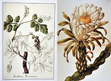
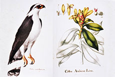
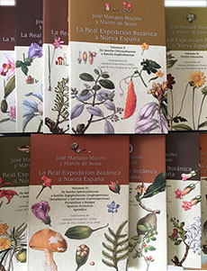

Referencias
- Lozoya L. X. 1997. Plantas, medicina y poder. Breve historia de la herbolaria mexicana. Procuraduría Federal del Consumidor. Pax, México, 176 pp.
- Terán E. M. 2001. Orígenes de la crítica literaria en México: la polémica entre Alzate y Larrañaga. El Colegio de Michoacán y la Universidad Autónoma de Zacatecas, 398 pp.
- Zamudio G. 2004. La Real Expedición Botánica de Sessé y Mociño. Boletín informativo de la Coordinación de la Investigación Científica, El faro, 4(42):10-11.
- Zárate M. Y. 2010. Un científico novohispano: José Mariano Mociño. Boletín informativo de la Coordinación de la Investigación Científica, El faro, 10 (106): 8-10
José Mariano Mociño
1757 - 1820
El hermoso quetzal resplandeciente de cola larga, Pharomachrus mocinno, fue llamado así en honor al naturalista José María Mociño. Con sus largas plumas se elaboró el llamado penacho de Moctezuma. Es el Ave Nacional de Guatemala, aparece en su bandera y además es su unidad monetaria.
José Mariano Mociño fue un ilustre naturalista que nació en 1757 en Real de Minas de Temascaltepec, hoy estado de México, y murió en España en 1820. Sus primeros estudios los realizó en teología y posteriormente en medicina en la Real y Pontificia Universidad de México. Apenas inaugurado el Real Jardín Botánico de la Nueva España en 1788, tomó un curso de botánica y destacó tanto en esta ciencia que en 1789 fue invitado a participar como miembro de la Real Expedición Botánica a Nueva España, organizada por la corona española. El objetivo de la expedición era recorrer los dominios del imperio y conocer el potencial de sus colonias.
La expedición duró de 1787 a 1803 y cubrió desde Nicaragua hasta el Golfo de California. Mociño también se incorporó a dos expediciones complementarias, una en la costa occidental de Canadá y otra en Guatemala de las cuales escribió: “Noticias de Nutka” y “Flora de Guatemala”, respectivamente. La Real Expedición Botánica fue de las más importantes en su tiempo debido a su duración, los territorios que recorrió y la calidad y cantidad del material que se colectó. De ella se originaron varias colecciones botánicas y se produjeron aproximadamente 2,000 ilustraciones y acuarelas, de los cuales 1,800 corresponden a plantas y el resto a varios grupos de peces, anfibios, reptiles, aves, mamíferos, insectos y algunos otros vertebrados.
Por su parte, Mociño en colaboración con el naturalista español Martín de Sessé, escribió: “Plantae Novae Hispaniae” y “Flora Mexicana”, manuscritos que dieron pie a la clasificación de más de tres mil plantas, muchas de las cuales se identificaron más tarde como nuevas especies.
Aportación



Enciclopedia “La Real Expedición Botánica a Nueva España”, obra editada por la UNAM y Siglo XXI Editores.
Naturalistas Siglo XVIII
Francisco Clavijero- José Antonio Alzate y Ramírez
- José Mariano Mociño
- Alejandro Humboldt
- Pablo de la Llave
 Línea de tiempo
Línea de tiempo